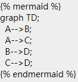
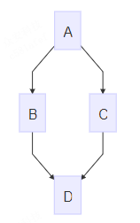

Mermaid
Gitbook 插件：支持渲染 Mermaid 图表
Mermaid
[!TIP|style:flat|iconVisibility:hidden|labelVisibility:hidden] npm install gitbook-plugin-mermaid
https://github.com/JozoVilcek/gitbook-plugin-mermaid
这个插件的依赖比较多，下载时间有点长。
我最终没有下载成功，于是使用了下面的 mermaid-gb3 这个插件。
{"plugins": [
"mermaid-gb3"
]}
使用语法

效果展示

Mermaid-gb3
[!TIP|style:flat|iconVisibility:hidden|labelVisibility:hidden] npm install gitbook-plugin-mermaid-gb3
https://github.com/chriswessels/gitbook-plugin-mermaid-gb3
{
"plugins": [
"mermaid-gb3"
]
}
两个插件语法几乎一致。
Flow 流程图
graph TD
A[Hard] -->|Text| B(Round)
B --> C{Decision}
C -->|One| D[Result 1]
C -->|Two| E[Result 2]
graph TD
A[Hard] -->|Text| B(Round)
B --> C{Decision}
C -->|One| D[Result 1]
C -->|Two| E[Result 2]
Sequence 时序图
sequenceDiagram
Alice->>John: Hello John, how are you?
loop Healthcheck
John->>John: Fight against hypochondria
end
Note right of John: Rational thoughts!
John-->>Alice: Great!
John->>Bob: How about you?
Bob-->>John: Jolly good!
sequenceDiagram
Alice->>John: Hello John, how are you?
loop Healthcheck
John->>John: Fight against hypochondria
end
Note right of John: Rational thoughts!
John-->>Alice: Great!
John->>Bob: How about you?
Bob-->>John: Jolly good!
Gantt 甘特图
gantt
section Section
Completed :done, des1, 2020-01-06,2020-01-08
Active :active, des2, 2020-01-07, 3d
Parallel 1 : des3, after des1, 1d
Parallel 2 : des4, after des1, 1d
Parallel 3 : des5, after des3, 1d
Parallel 4 : des6, after des4, 1d
gantt
section Section
Completed :done, des1, 2020-01-06,2020-01-08
Active :active, des2, 2020-01-07, 3d
Parallel 1 : des3, after des1, 1d
Parallel 2 : des4, after des1, 1d
Parallel 3 : des5, after des3, 1d
Parallel 4 : des6, after des4, 1d
state 状态转移图
stateDiagram
[*] --> First
First --> Second
First --> Third
state First {
[*] --> fir
fir --> [*]
}
state Second {
[*] --> sec
sec --> [*]
}
state Third {
[*] --> thi
thi --> [*]
}
stateDiagram
[*] --> First
First --> Second
First --> Third
state First {
[*] --> fir
fir --> [*]
}
state Second {
[*] --> sec
sec --> [*]
}
state Third {
[*] --> thi
thi --> [*]
}
[!WARNING|style:callout|iconVisibility:hidden|label:注意] 如果页面内容显示不完整，请 F5 刷新当前页面